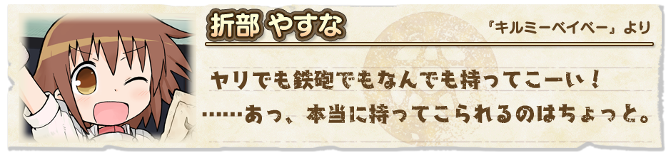
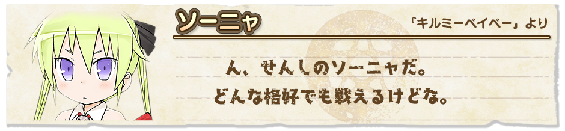
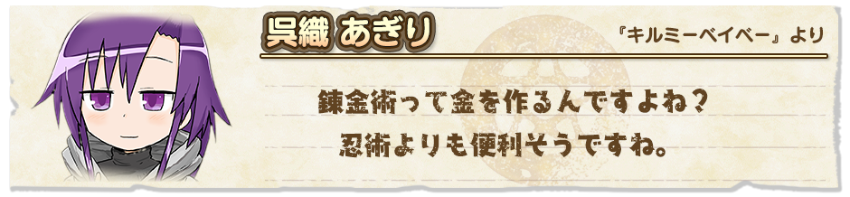
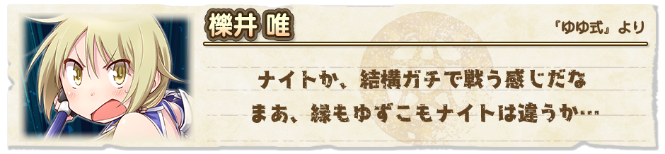

『きららファンタジア』をご利用いただき、誠にありがとうございます。
1月19日17:00より、「新規キャラクターピックアップ召喚」を開催いたします。
「キルミーベイベー」より折部 やすな（CV.赤﨑千夏）と呉織 あぎり（CV.篠田みなみ）が『きららファンタジア』に登場！
更に、同じく「キルミーベイベー」よりソーニャ（CV.田村睦心）、「ゆゆ式」より新衣装の櫟井 唯（CV.津田美波）も出現率がアップしています。
ソーニャが先行登場していた「キルミーベイベー」が『きららファンタジア』に正式参戦！
やすな・あぎりが登場するほか、ソーニャもピックアップ対象となります。
2018年1月19日 17:00 ～ 2018年1月31日 13:59
・10回召喚では★4以上のキャラクターが1体以上確定します。
・初回のみ星彩石300個で10回召喚が可能です。
・期間中は、ピックアップ対象キャラクターの提供割合がアップしています。




※表示されているキャラクターイラストは進化前のものです。
本召喚の開催を記念して、ルームショップに「キルミーベイベー」関連の新商品が追加されています。
購入可能期間：2018年 1月19日 17:00 ～
ルームショップに追加されるアイテム
・ソーニャのお仕事セット
・提供割合の詳細はゲーム内の召喚画面＞提供割合からご確認ください。
・ピックアップ対象のキャラクターは同じレアリティの他のキャラクターよりも提供割合が高く設定されています。
・キャンペーン内容は予告なく変更になる場合がございます。ご了承ください。
今後とも『きららファンタジア』をよろしくお願いいたします。